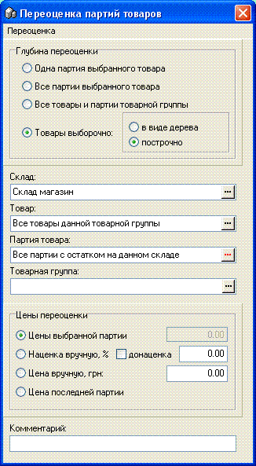
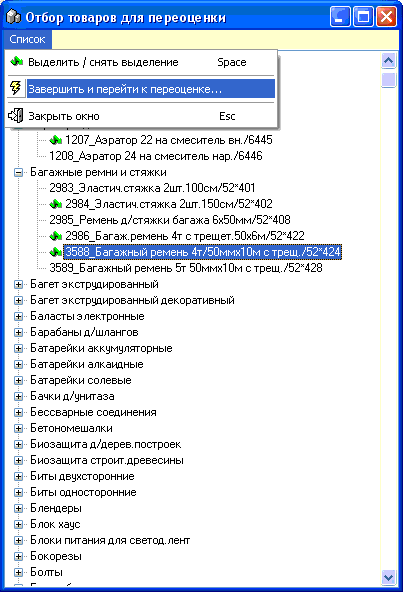
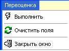

- Одним из основных документов, используемых в
программе, является переоценка.
- Переоценки бывают двух видов:
- 1. Автоматическая переоценка. Создается другими
документами или событиями при работе с этими документами (конечно в
зависимости от настроек программы - см.разделы справки, например, вкладка в
настройках "Наценка-Переучет" ). Например: приходная накладная
при оприходовании товара по новой цене переоценит старый остаток товара
до новой цены. Или при проведении возврата чека будет создана переоценка на
разницу стоимости количества возвращаемого товара от цены по которой он был
продан - до текущей цены партии в которую он возвращается.
- 2. Ручная переоценка. Создается пользователем
сама по себе, без привязки к какому-то постороннему документу или событию. Для
этого есть отдельная форма переоценки, показанная на рисунке ниже.
- 
- Рассмотрим варианты Глубины переоценки в верхней
части окна и какие опции в средней и нижней части используются
с ними.
- 1. Одна партия выбранного товара - используется
очень редко, выберите Склад, Товар, Партию. Внизу выберите Наценка вручную или
Цена вручную.
- 2. Все партии выбранного товара - частота
использования ниже средней. Выберите Склад (опция), Товар, Партия (опция).
Внизу выберите любой из вариантов.
- 3. Все товары и партии товарной группы -
используется довольно часто. Выберите Склад (опция), Товарная группа. Внизу
выберите Наценка вручную или Цена вручную.
- 4. Товары выборочно - используется часто.
Выберите Склад (для "построчно"-обязательно), при нажатии на Товар возможны 2
варианта дальнейших действий:
- 4.1. "в виде дерева" -
откроется диалоговое окно с древовидной структурой товарных групп/товаров
(пробелом отметьте интересующие вас позиции, не выделяйте заголовки групп, по
окончании выбора выберите в меню "Завершить и перейти к переоценке..." В
окошке выбора товара появится надпись "Отобранные товары..."
- 
- 4.2. "построчно" - откроется
отдельная форма построчной переоценки. В отличии от всех предыдущих вариантов,
завершение переоценки в ней реализовано отдельно (см. подраздел справки этого
раздела "Переоценка построчно")
- После выбора желаемых Параметров переоценки
выберите в главном меню окна "Выполнить".
- 
- Если все опции выбраны в совместимом варианте
появится вопрос подтверждения переоценки, а затем и сообщение об успешности
проведения операции.
- Посмотреть на результаты переоценки и распечатать
документ можно из журнала переоценки (см.соответствующий раздел
справки).